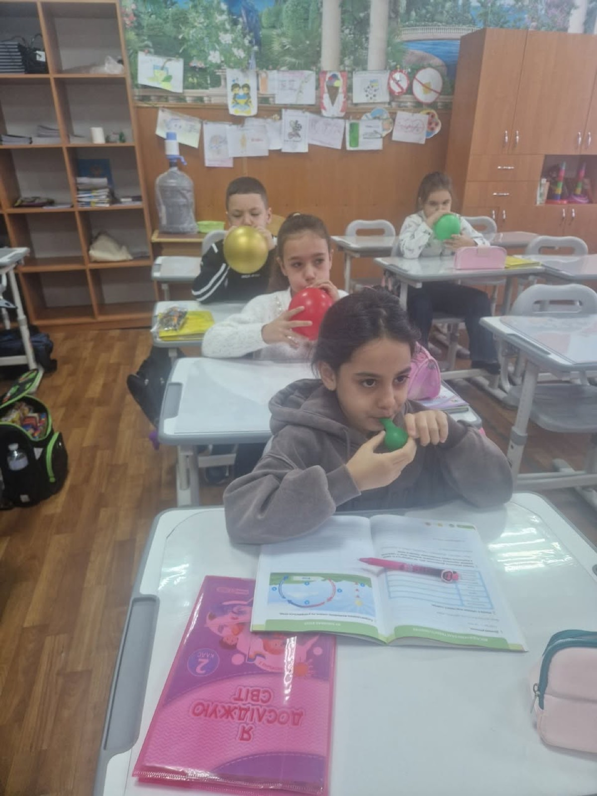
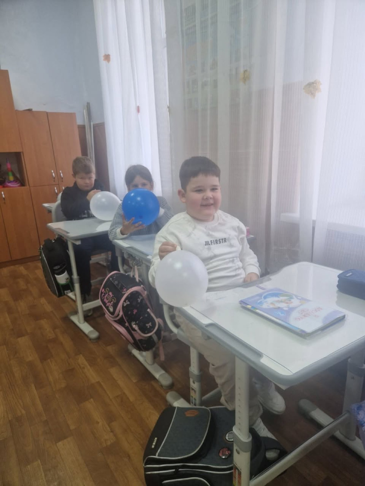
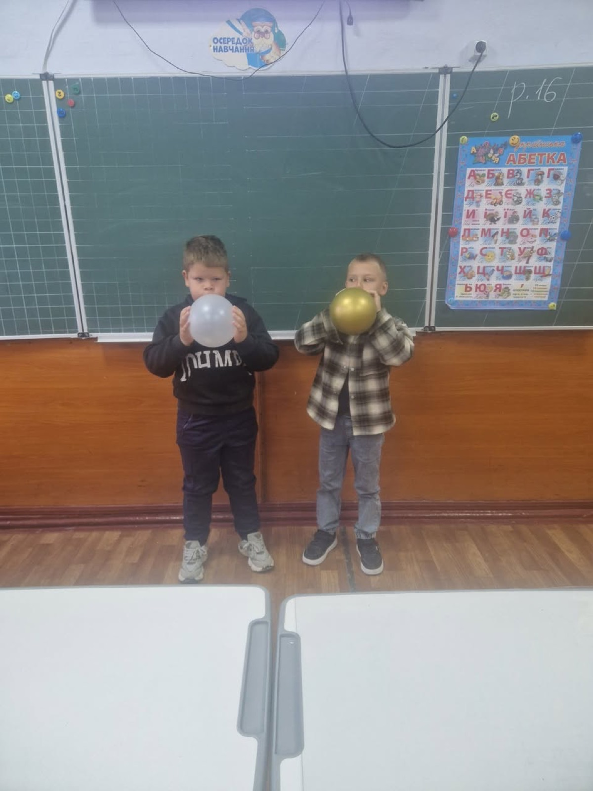
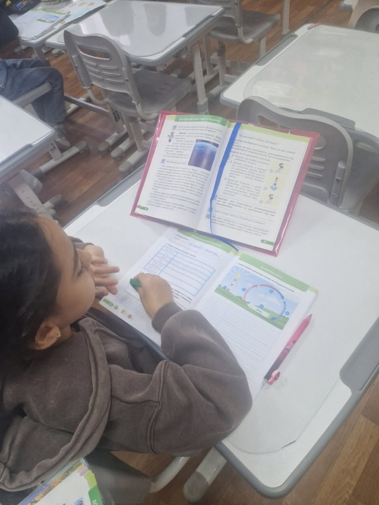

Перший день Тижня початкових класів у 2-А класі був присвячений пізнанню навколишнього світу та дослідженню такого важливого природного явища, як повітря і вітер.
Під час тематичного дня учні:
– пригадали, що таке повітря та де воно знаходиться;
– з’ясували, які властивості має повітря;
– обговорили, чому повітря необхідне людям, тваринам і рослинам;
– дослідили, як виникає вітер та від чого залежить його сила;
– поговорили про значення вітру в природі та житті людини;
– визначили, що забруднює повітря та що ми можемо робити для його збереження чистим;
– читали вірш про вітер, відповідали на запитання;
– висловлювали власні припущення, спостереження та думки;
– виконали творче завдання — передавали вітер за допомогою малюнків, намагаючись передати його рух та силу через зображення.








Джерело: спільнота ліцею у Facebook, Діана Сердюк.